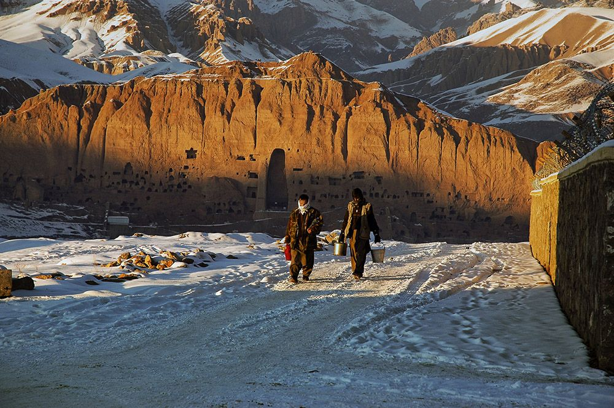

Bamyan is a province and historic city located in central Afghanistan, known for its breathtaking natural beauty, historical significance, and cultural heritage. The region is particularly famous for the Bamyan Valley, which is home to ancient Buddhist archaeological sites and the Bamyan Buddhas, once considered one of the most impressive and iconic monuments in the world.
Bamyan is a province and historic city located in central Afghanistan, known for its breathtaking natural beauty, historical significance, and cultural heritage. The region is particularly famous for the Bamyan Valley, which is home to ancient Buddhist archaeological sites and the Bamyan Buddhas, once considered one of the most impressive and iconic monuments in the world.
ms between the East and West. The region’s strategic location helped it flourish as a hub of Buddhist culture, particularly during the time of the Kushan Empire (1st to 3rd centuries CE), when it became one of the prominent centers of Buddhism in Central Asia.became one of the prominent centers of Buddhism in Central Asia. Buddhas, carved into the cliffs of the valley in the 6th century, were a symbol of the region’s deep cultural and religious heritage. These monumental statues—standing 35 and 53 meters tall—were among the largest in the world before they were tragically destroyed by the Taliban in 2001, as part of their campaign to eliminate all non-Islamic relics. Despite their destruction, the site remains a UNESCO World Heritage site, a symbol of both loss and resilience, and ongoing efforts are underway to preserve and protect the region's rich archaeological legacy.
Natural Beauty In addition to its historical and cultural significance, Bamyan is known for its stunning natural landscapes. The province is home to the Bamyan Valley, which is surrounded by towering mountains and is known for its striking scenery, including green valleys, snow-capped peaks, and deep gorges. The Band-e Amir lakes, a series of deep blue lakes formed by natural dams, are another highlight of the region and one of Afghanistan’s most beautiful natural attractions. Bamyan's mountainous terrain provides ample opportunities for outdoor activities such as hiking, trekking, and exploring its rich natural beauty, making it a growing destination for eco-tourism in Afghanistan. The valley also benefits from a relatively mild climate, with warm summers and cold winters, making it a picturesque destination year-round
|  |
The Beauty of Bamyan Bamyan is a land of serene beauty, where nature and calmness come together in perfect harmony. Its breathtaking landscapes are a sight to behold, with wide-open valleys, rolling hills, and majestic mountains that stretch far into the horizon. The air is fresh and pure, carrying with it a sense of peace that touches the soul. In every season, Bamyan showcases a different side of its beauty. Spring brings vibrant colors as the fields bloom with wildflowers, creating a carpet of red, yellow, and green. During summer. Autumn paints the valleys in golden hues, with leaves falling softly like whispers from the trees. In winter, snow blankets the mountains and plains, transforming Bamyan into a silent, white wonderland that reflects the beauty of simplicity. The beauty of Bamyan lies not just in its landscapes but in the quiet stillness that surrounds it. It is a place where one can pause, reflect, and connect with nature. The endless views and peaceful atmosphere offer comfort and inspiration, making Bamyan a truly unforgettable part of the world. |